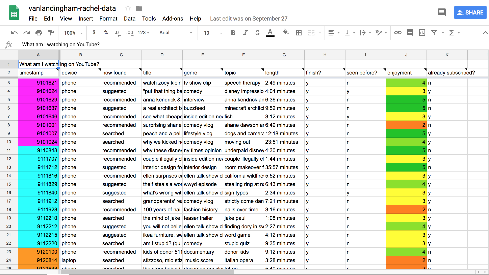
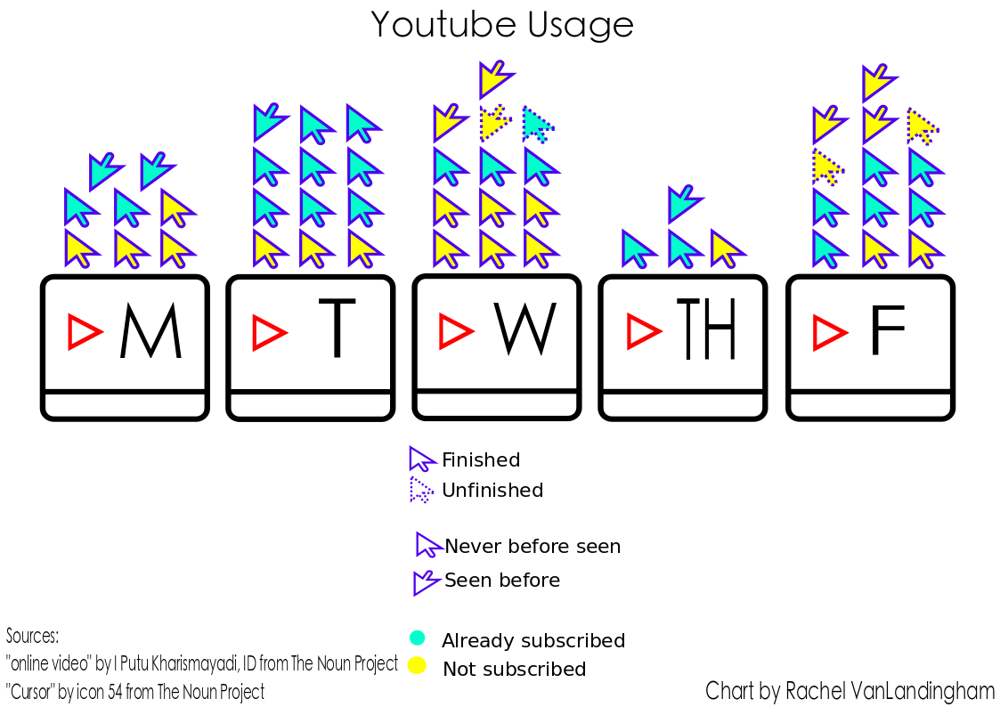
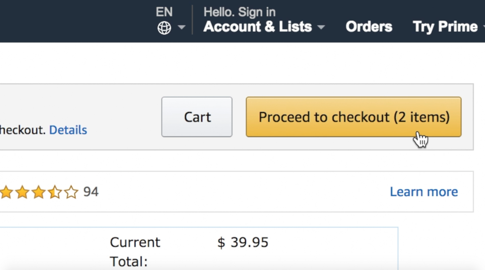

Introduction
Welcome to my datastory webpage! My name is Rachel VanLandingham, and this semester I have learned all about creating digital media. Below, you will find information about each of the projects I have done that all make up my personal datastory. Thanks for visiting my page and enjoy!
Data Collection

For my data collection project, I decided to track my YouTube usage. I recorded the videos I watched over the course of five days and took note of the time of day I watched them, my level of enjoyment, the video length, whether or not I'd seen them before, whether or not I finished them, and more. I learned a lot about how my personal digital habits are related to social and political media practices.
Data Visualization

For my data visualization project, I recognized what patterns existed in my YouTube watching habits and created a visualization to diplay my findings. I focused on the following categories: subscribed or not, finished video or not, and seen before or not.
Explained Video

For the explained video project, my group and I decided to research the ethical issue surrounding Amazon's algorithms and how they affect the website users. We learned that a ton of information is collected on each person when he or she purchases an item, and Amazon uses the information to suggest other products the customer may like. We were able to follow the course objective of concisely articulating a complex topic with a video.
Conclusion/About Me
My datastory is unique because it reflects my own story when it comes to digital habits and media.